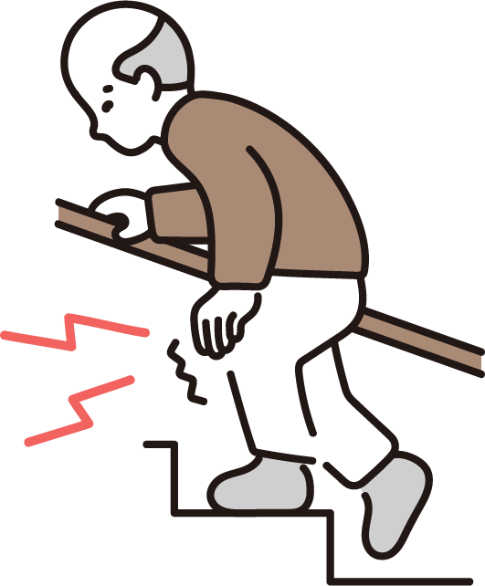
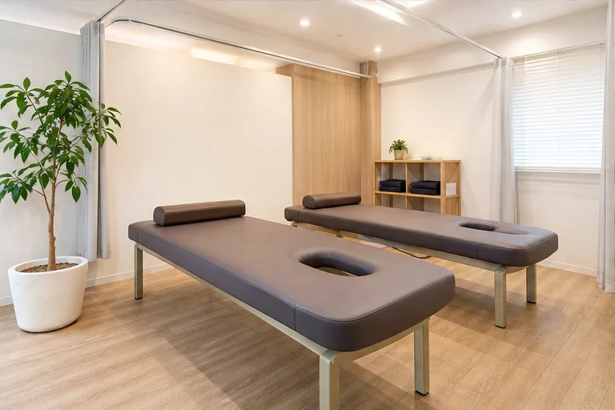

首・肩のつらさ
デスクワークや家事で感じる首・肩まわりの不調

掲載写真はレイアウト確認用のサンプルです
ABOUT
スポーツ中のケガはもちろん、日常生活で感じる身体の不調まで。 まずは今の状態や気になることをお聞かせください。
デスクワークや家事で感じる首・肩まわりの不調
立ち仕事や日常動作で気になる腰まわりのお悩み

歩行や階段、運動時に感じる膝・足まわりの不調
捻挫・打撲など、部活動やスポーツでの急なケガ
交通事故などのあとに気になる身体の違和感
REASONS
駅から通いやすく、学校や仕事の帰りにも立ち寄りやすい立地です。
忙しい方にも通っていただきやすい受付時間を設けています。
柔道整復師が身体の状態を確認し、分かりやすく説明します。
外傷のご相談から日々のコンディショニングまで幅広く対応します。
MENU
利用時間・料金など、詳しくは院までお問い合わせください。

 PHOTO SAMPLE
PHOTO SAMPLE
DIRECTOR
「来てよかった」と思っていただけるよう、
お話を丁寧に伺うことを大切にしています。
身体のお悩みは、同じように見えても一人ひとり違います。 近藤接骨院では、気になることや不安なことを伺い、身体の状態と施術内容をできるだけ分かりやすくお伝えします。 スポーツをしている方も、日常の身体のお悩みをお持ちの方も、お気軽にご相談ください。
CLINIC
初めての方にも安心してお越しいただけるよう、院内の雰囲気をご紹介します。

← 横にスワイプしてご覧いただけます →
ACCESS
駅から通いやすい立地です
※受付時間は公開前に必ず最新情報をご確認ください。
身体のお悩み、まずはお気軽にご相談ください
公開前の設定が必要です
このボタンには、正式な電話番号またはLINE URLを設定してください。